AnyPortrait > Manual > Jiggle Bone
Jiggle Bone
1.4.0

"Jiggle Bone" refers to a bone that moves as if it is in reality with the addition of a physics effect.
In particular, AnyPortrait's Jiggle Bone supports physical effects by "inertia" and "air resistance".
AnyPortrait's Jiggle Bone has the following characteristics:
- Resistance and inertia are calculated by detecting the position of the end point of the bone in real time.
- Jiggle bones do not work for "Helper" or zero length bones.
- "The position change" includes both "position change in the Unity scene" and "position change by animation".
- If you set the Jiggle bone with creating the basic shape with animation, the quality will be further improved.
- Gravity is not applied. If you want to reproduce gravity, make an animation to express "shape when gravity is applied" and apply a Jiggle bone.
- IK chain does not need to be activated, this feature can be applied to only one bone.
- Jiggle bones will not work if the physics effect of apPortrait is disabled by script(SetPhysicEnabled(bool)), or if the Important option is off.
- When Jiggle bones are applied to successive bones, they tend to shake more sensitively.
- Depending on the performance of the AnyPortrait Editor, simulation results may be somewhat inaccurate. So, it is recommended to test in the Unity scene.
- When recording video with the screen capture function, if you turn on the physics effect, the Jiggle bone is applied and recorded. However, there may be some differences from the simulation in the Unity scene.
- Movement by physical collision is not supported.
This page covers how to make "long hair move naturally" and quickly with Jiggle Bone like the image above.

(1) Select the Mesh Group.
(2) Select the Bone tab.
(3) Select the bone you want to apply the Jiggle bone to.
(4) Press the "Jiggle Bone" button to turn it ON.
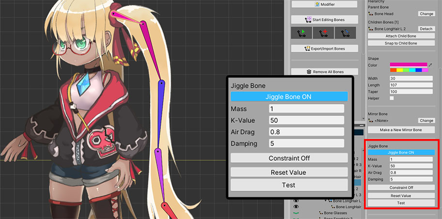
When the Jiggle bone setting is activated, the properties appear as above.
1. Mass : The higher the value, the slower and heavier the movement.
2. K-Value : This is the property to return to the original form. The larger the value, the faster and more elastically restored.
3. Air Drag : It is the degree of receiving air resistance and has a value between 0 and 1. The larger the value, the more sensitive it is to external movements and the larger the movement. This value determines the overall degree of application of the JIggle bone effect.
4. Damping : The larger this value, the shorter the shaking time and the faster it is restored to its original shape. Unlike K-Value, if this value is large, elasticity decreases.
5. Constraint ON/OFF : You can limit the angle of swing. If not restricted, the bone rotates with a value between -180 and +180 degrees.
6. Reset Value Button : Initialize property values.
7. Test Button : Pressing this button exerts the same random force on all Jiggle bones. You can test the property values.

Let's limit the rotation range.
(1) Press the Constraint button to switch to the ON state and set the angle.
(2) The rotation range of the bone in the work space is indicated by a yellow line.
Now, the Jiggle bone will swing within the specified angle.
However, this angle is the maximum range, and actually, the speed starts to decrease from about 70% of the range for natural movement.
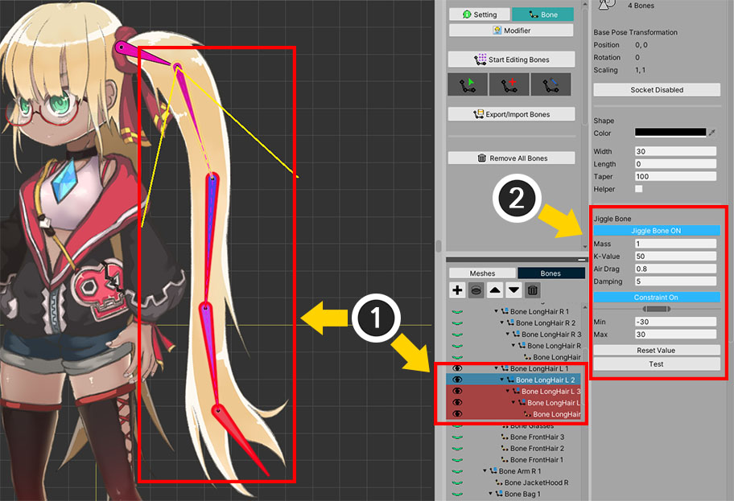
Let's apply the Jiggle bone attribute to other bones.
You can select multiple bones and apply Jiggle bones at once.
(1) Select all target bones. (You can select multiple bones by pressing Ctrl or Shift.)
(2) You can set the Jiggle bone at once on the right UI.

You can test the Jiggle bone right away.
(1) Turn off Bone Edit Mode. (In Bone Edit Mode, the Jiggle bones are disabled and the Test button cannot be pressed.)
(2) Press the Test button.
(3) You can see all Jiggle bones moving.
You can conveniently adjust the physical properties using the Test function.
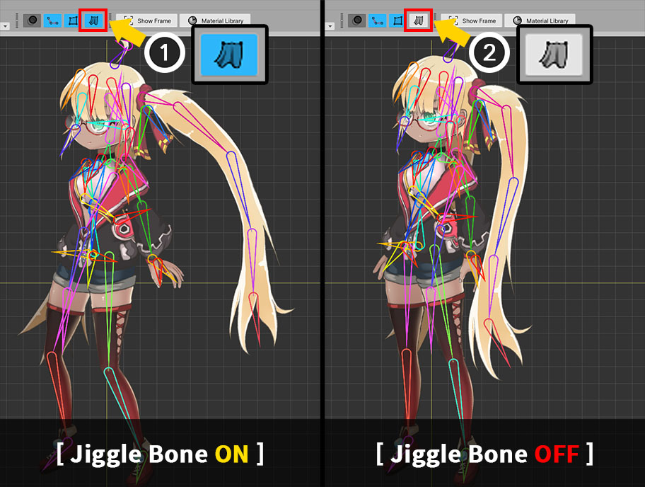
Now when you play the animation on the Root Unit or on the Animation editing screen, you can see the character moving with the Jiggle bone applied.
If you turn off the Physics Effect as above in the workspace, Jiggle bones will not be applied.
After Bake, test your character's Jiggle bone in the Unity scene!
Controlling Weight with Control Parameters
1.4.0
By default, Jiggle bones always work, but sometimes you need to stop the Jiggle bones from moving.
A typical example in the game is that a stunned character's arms and legs are shaken and stopped.
In this case, it would be convenient to be able to control how much the Jiggle bone behaves with a Control Parameter.
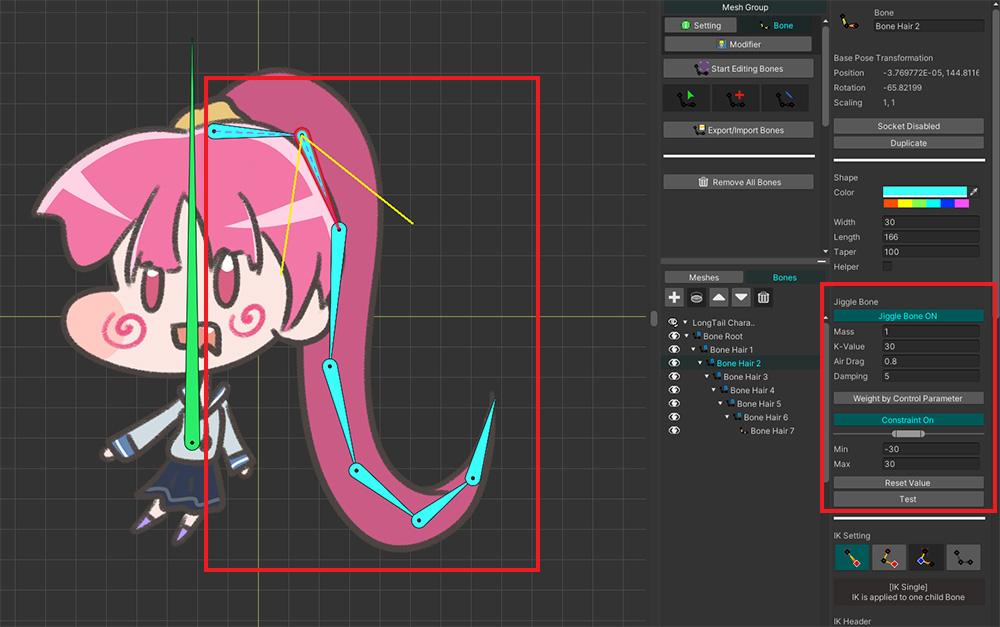
We prepared a character with Jiggle bones as above.
When the character moves, the long hair will wiggle.
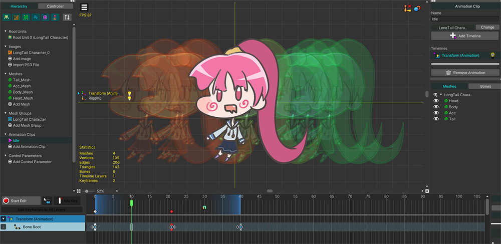
To see the movement of Jiggle bones, we made a simple animation of the character moving left and right.
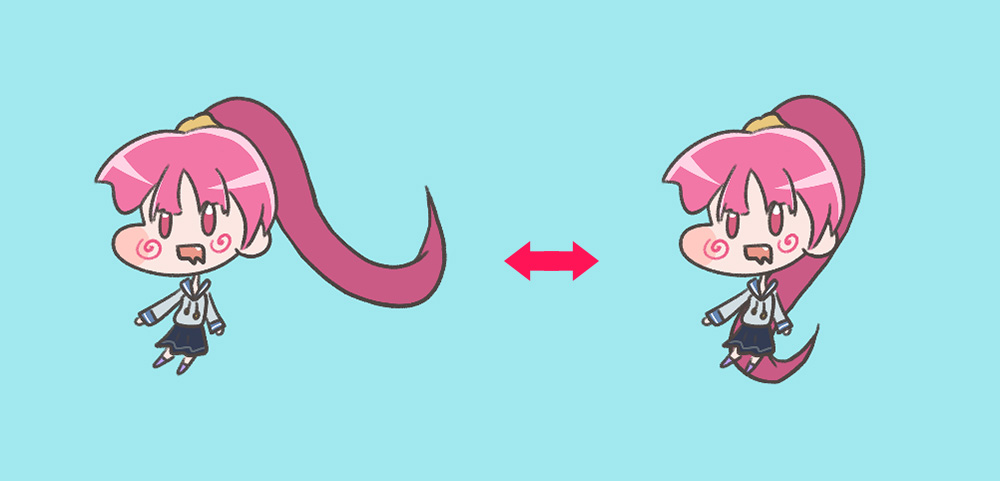
When the game is launched, the character moves as shown above, and the hair with Jiggle bones also moves according to inertia.
Now we will use a control parameter and a simple script to control the movement of Jiggle bones.
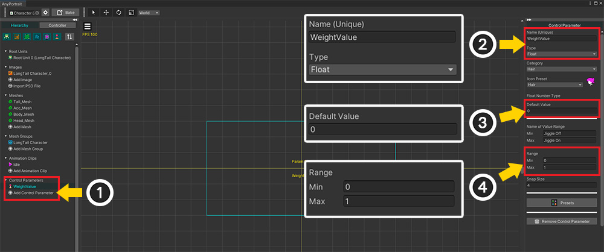
Let's create a Control Parameter to turn the Jiggle bone on or off.
(1) Add a new Control parameter.
(2) Set the name of the Control Parameter and set it as Float type.
In this example, we set it as "WeightValue", and let's remember this name.
(3) Set the Default to 0 or 1.
(4) Set the Range of values to 0 to 1.
The weight of the Jiggle bone ranges from 0.0 to 1.0, so set the range of the control parameter also the same.
Types other than Float are not supported.
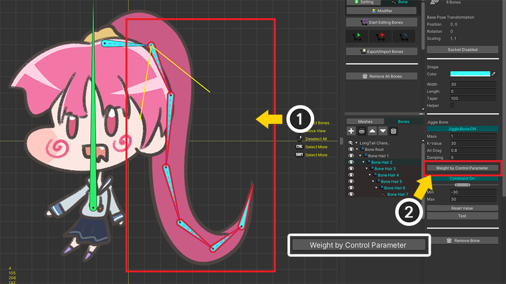
(1) Select all the bones to which the Jiggle bone option is applied.
(2) Activate the option by pressing the Weight by Control Parameter button.
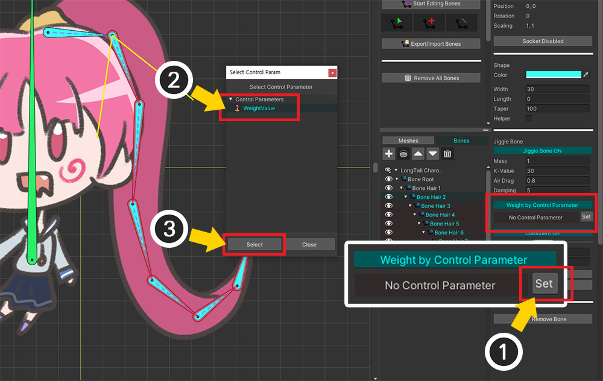
(1) Press the Set button.
(2) Select the Control Parameter created earlier.
(3) Press the Select button.
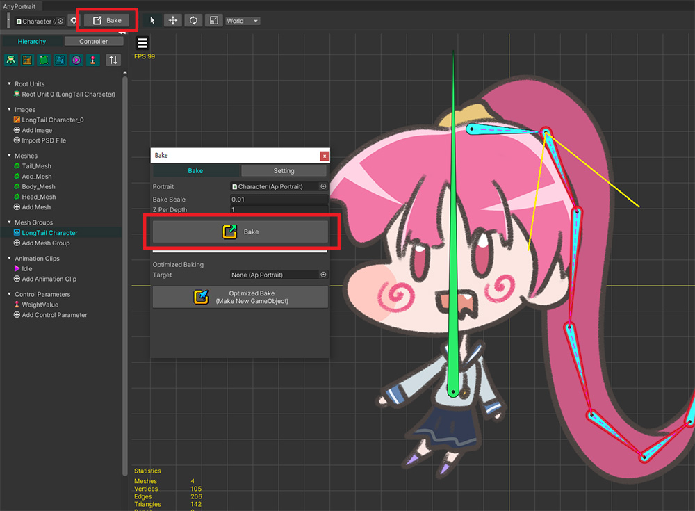
Run Bake to apply the changes to the Unity scene.
Now let's write a new script like below to control the Control Parameter.
using UnityEngine;
using AnyPortrait;
public class WeightedJiggleBoneSample : MonoBehaviour
{
// Target apPortrait
public apPortrait portrait;
void Update()
{
// If you press the numeric keys, the value of the control parameter changes to 0.0, 0.5, 1.0.
if (Input.GetKeyDown(KeyCode.Alpha1))
{
portrait.SetControlParamFloat("WeightValue", 0.0f);
}
if (Input.GetKeyDown(KeyCode.Alpha2))
{
portrait.SetControlParamFloat("WeightValue", 0.5f);
}
if (Input.GetKeyDown(KeyCode.Alpha3))
{
portrait.SetControlParamFloat("WeightValue", 1.0f);
}
}
}
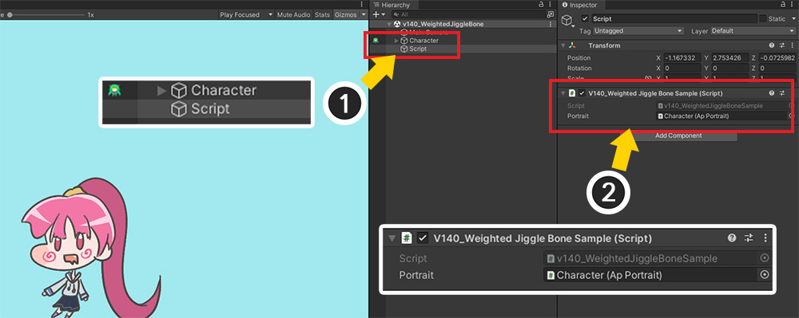
(1) Create a new GameObject, (2) add the written script and assign apPortrait.
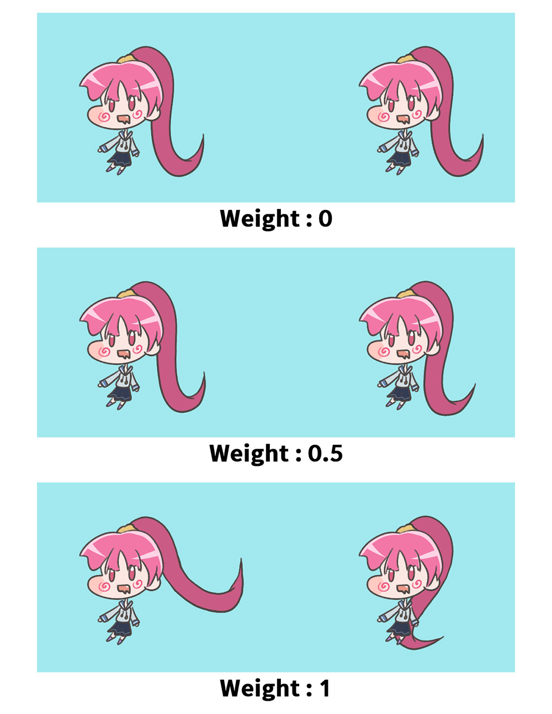
Run the game and change the value of the control parameter from 0 to 1 by pressing the number keys.
You can see the degree to which the Jiggle bones are applied changes as above.
By using control parameters, it is possible to control the weight of Jiggle bones by animations as well as scripts.

(1) Select the Animation Clip created earlier.
(2) Click the Add Timeline button.
(3) Select Control Parameters and (4) press the Select button.
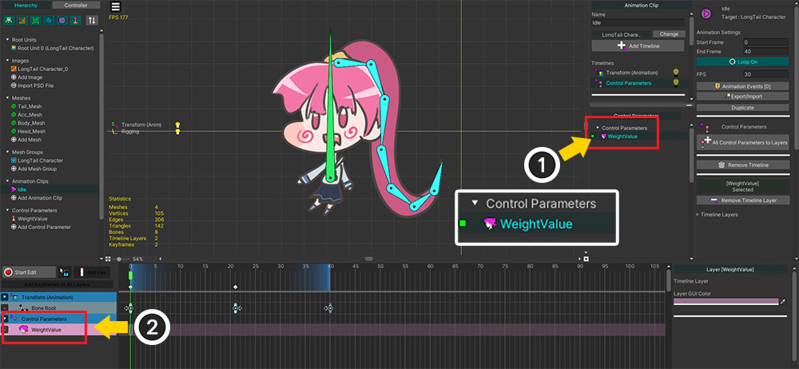
Add the "WeightValue" control parameter to the timeline.
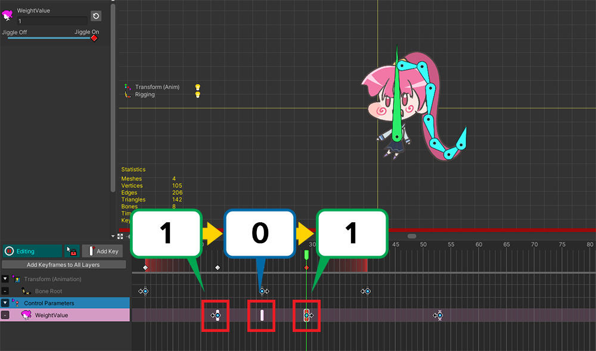
Add a keyframe to cause the value of the control parameter to change from 1 to 0 and back from 0 to 1.
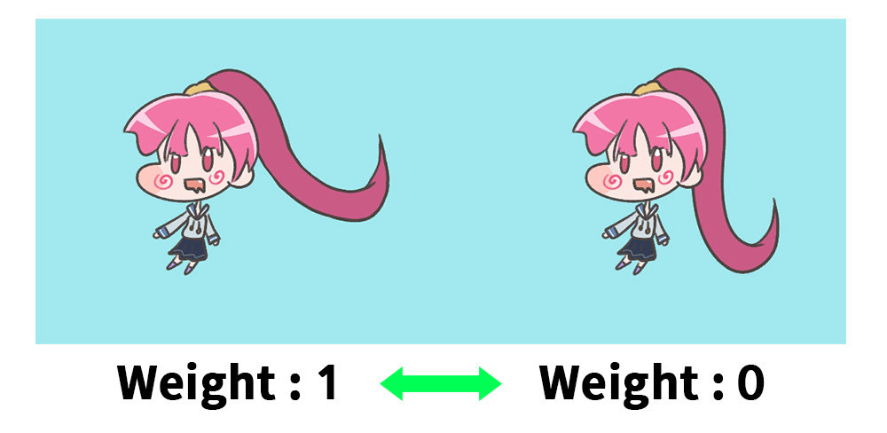
If you Bake and run the game, you will see the weights of the Jiggle bones change according to the animation.
Please use this function for the only purpose that turn the Jiggle bone on or off!
"Weight" has a value between 0 and 1, but this is to prevent the "wrong movement" of physics operations when suddenly turned on or off.
The name of this function is "Weight", but, in fact, the independent movement of the Jiggle bone is not interpolated by weight, it works by limiting some properties.
Therefore, please change the weight for the short time to enable or disable the Jiggle bones.